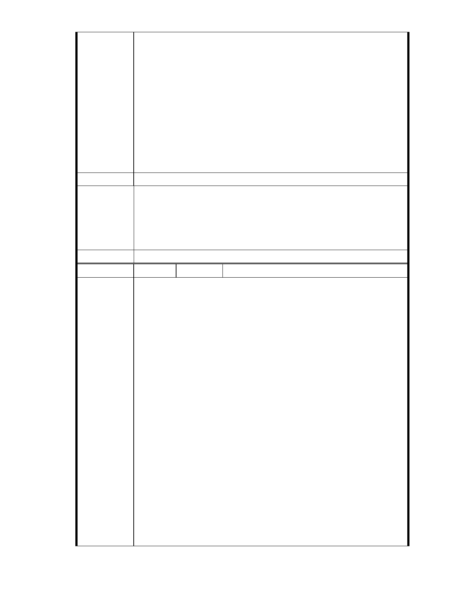

一、依據 2012 年 9 月 24 日本大廈第 16 屆第 l 次臨時管委會決議辦理。
二、依據依據臺北市土地使用分區管制規則第 75 條第 1 項：「在保護
區內得為左列規定之使用」，其中第 2 款第 3 目規定：「二、附條件允
許使用：（三）第八組：社會福利設施」之規定，本案無須辦理都市計
畫變更，得依現行法令規定於保護區內附條件作為社會福利設施使用。
三、依據 95 年 12 月 4 日專案小組第七次審查會議紀錄：「本案所規劃
社會福利設施依現行土地使用分區管制規則，在原分區保護區內即可設
置而無庸辦理變更，建議規劃單位在量體配置上酌減後即可滿足原法規
之需求」辦理，本案無須辦理都市計畫保護區變更。
四、依據 95 年 10 月 11 日專案小組第六次審查會議紀錄，會議結論六：
「1 、不宜變更坡地他用」，本案實不宜辦理都市計畫保護區變更。
建議辦法
一、本案申請範圍於慈濟購得前已遭填平破壞作汽車停車場使用，已長
市府說明
年不具保護區之功能；目前申請方案較先前方案已大幅降低開發強
度、調整使用項目並承諾大面積滯洪設施等回饋事項，將改善地區
整體環境促進多贏發展。
二、相關陳情意見將納入本案審查人民意見，依法定程序辦理。
委 員 會 決 議 同編號 1。
編號
陳情理由
151 陳情人 大湖內閣大廈管理委員會
發文日期：中華民國 101 年 10 月 18 日
發文字號：內慈字第 1011007 號
主旨：有關「變更臺北市內湖區成功路五段大湖公園北側部分保護區及
道路用地為社會福利特定專用區主要計畫案」暨「擬訂臺北市內湖區成
功路五段大湖公園北側社會福利特定專用區細部計畫案」為 87 年貴會駁
回重新包裝之變更保護區案，請貴會應就先前駁回理由逐一審議，若有
駁回理由未喪失或未改善者，應以相同理由駁回本案變更申請。
說明
一、依據 2012 年 9 月 24 日本大廈第 16 屆第 1 次臨時管委會決議辦理。
二、基於台北市保護區劃設的目的與意義、全球氣候驟變下的極端天候，
以及保護區對於台北市內湖區大湖里與本大廈的重要價值，認為水土保
持、天然資源、生態與都市排水蓄洪等功能，應優先於社會福利設施開
發使用。
三、慈濟在民國 86 年向新陸開發公司買本案土地。分別在 86 年 12 月
13 日及 12 月 23 日，提出變更保護區作為醫療園區主要／細部計畫，
台北市政府在 87 年 1 月 16 日駁回該計劃，並載明駁回理由，惠請貴委
員會應就先前駁回理由逐一審議，若有駁回理由未喪失或未改善者，應
以相同理由駁回本案變更申請。
四、經查本案用地慈濟內湖園區（台北市內湖區大湖段 120 、133 、144 、
145 等四筆）為山坡地保護區溜地目（面積 31851 ㎡）土地，之前於民
國 69 年由大湖遭非法填平後土質鬆軟，不適宜變更承受高強度建築之開
- 221 -